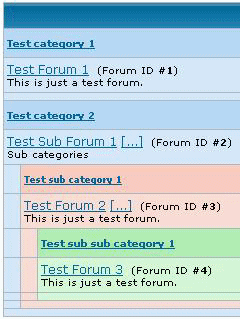

How do I setup Hierarchies?
Plan your forum layout first, because you do not want to be altering anything later, as some have reported losing their data when 'updating' categories/forums. Get it right then leave alone. The hierarchies can be setup from Admin -> Forums -> Management and can be set to a depth of two levels.
- Category are the labels.
- Forums are where you post the messages.
Example:
|  |
- Use the create new category button to first create the categories Test category 1, and Test category 2.
- Use the create new forum button to create the forums Test Forum 1 (#1), and Test Sub Forum 1 (#2).
- Now to create a sub-forum Test Forum 2 under the Test Sub Forum 1 forum.
- Create a new category Test sub category 1, this allows the creation of a first sub-forum, Test Forum 2 (#3) (shown in pink).
- By repeating the action above, again a category first, Test sub sub category 1, then a forum, Test Forum 3 (#4), will create a second level sub-sub-forum (shown in green).
- When creating a forum use the category drop down list to choose which category to place the new forum under. Of course you can have as many forums under a category as you wish.
|
- How do I completely disable posting in the main forum when there are Sub-forums above it?
The only way that this is possible is to restrict the main (holding) forum to ADMINs only. This will stop all other user levels from posting.
|